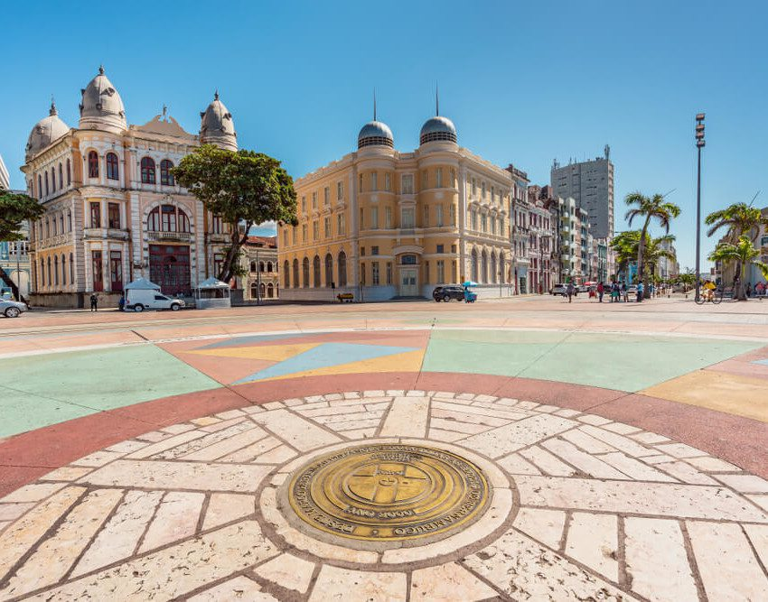
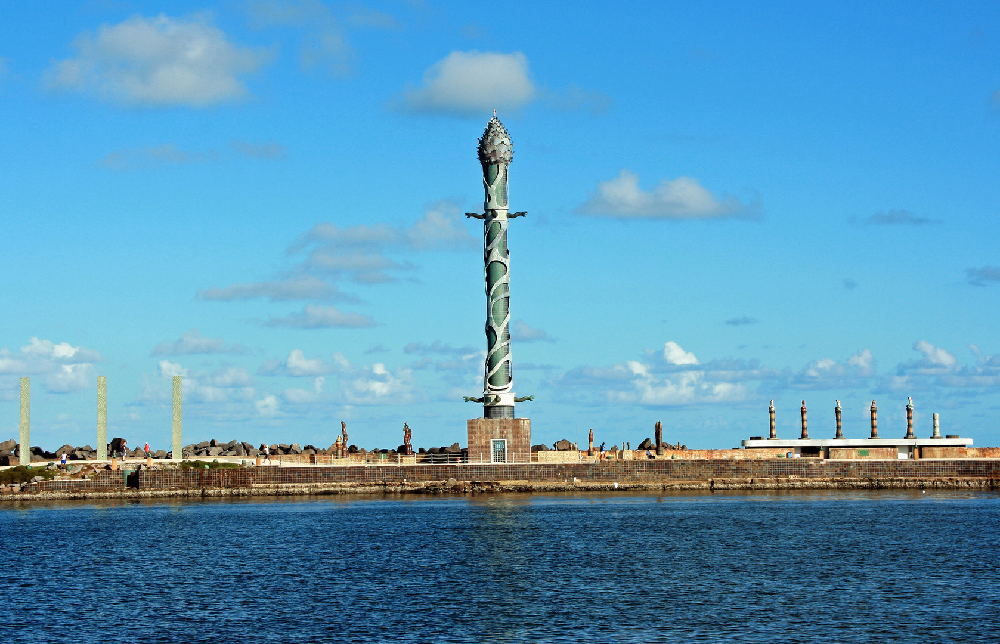

Bem-vindo ao Marco Zero
O Marco Zero é um dos pontos turísticos mais emblemáticos da cidade do Recife, capital de Pernambuco. Localizado no bairro do Recife Antigo, este local marca o ponto de partida para todas as estradas que partem da cidade.
Com uma vista privilegiada para o oceano Atlântico e cercado por edifícios históricos, o Marco Zero é o local ideal para começar um passeio pelo Recife Antigo. É aqui que você pode encontrar o famoso Cais do Sertão e a Rua do Bom Jesus, uma das ruas mais antigas do Brasil.
Veja o Marco Zero no Google Maps
Praça do Marco Zero

Monumento do Marco Zero
